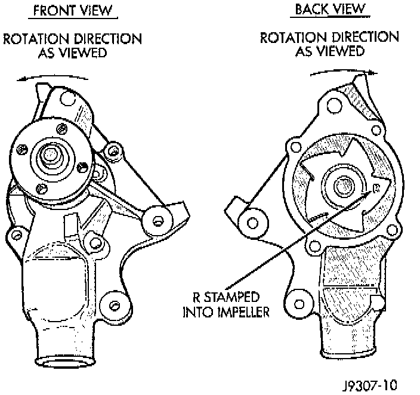

Water Pump: Description and Operation

GENERAL INFORMATION
A centrifugal water pump circulates coolant through the water jackets, passages, intake manifold, radiator core, cooling system hoses and heater core. The pump is driven from the engine crankshaft by a single serpentine drive belt on all engines. The water pump impeller is pressed onto the rear of a shaft that rotates in bearings pressed into the housing. The housing has two small holes to allow seepage to escape. The water pump seals are lubricated by the antifreeze in the coolant mixture. No additional lubrication is necessary.
CAUTION: This engine is equipped with a reverse (counterclockwise) rotating water pump and thermal viscous fan drive assembly. REVERSE is stamped or imprinted on the cover of the viscous fan drive and inner side of the fan. The letter R is stamped into the back of the water pump impeller. Engines from previous model years, depending upon application, may have been equipped with a forward (clockwise) rotating water pump. Installation of the wrong water pump or viscous fan drive will cause engine over heating.
A quick test to determine if the pump is working is to check if the heater warms properly. A defective water pump will not be able to circulate heated coolant through the long heater hose to the heater core.